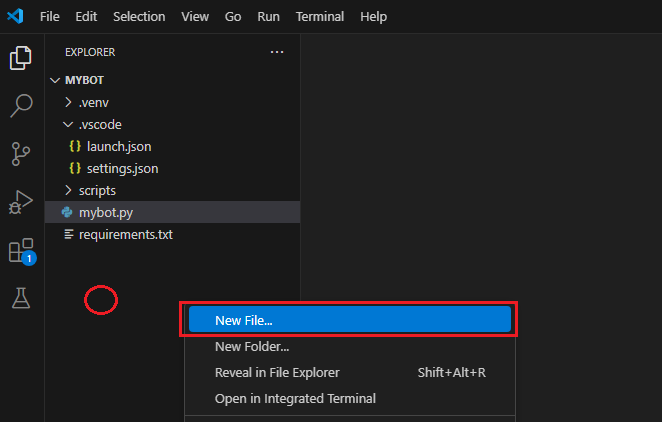
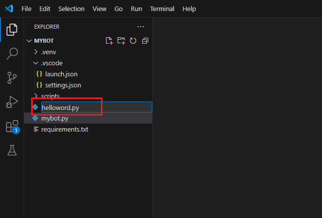
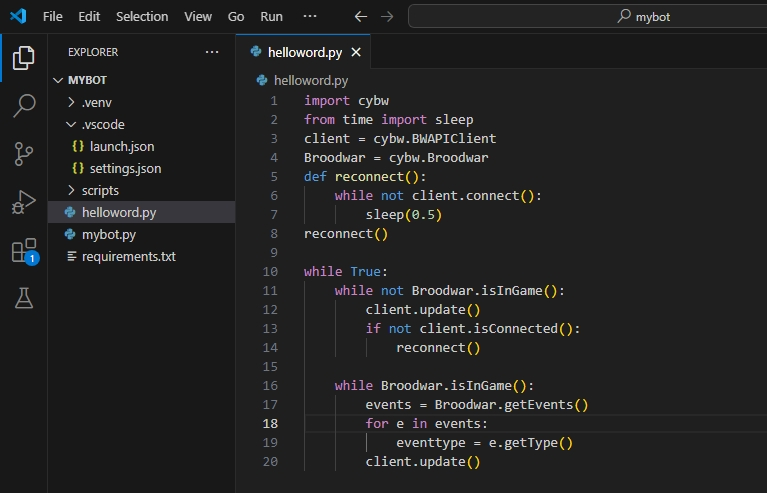
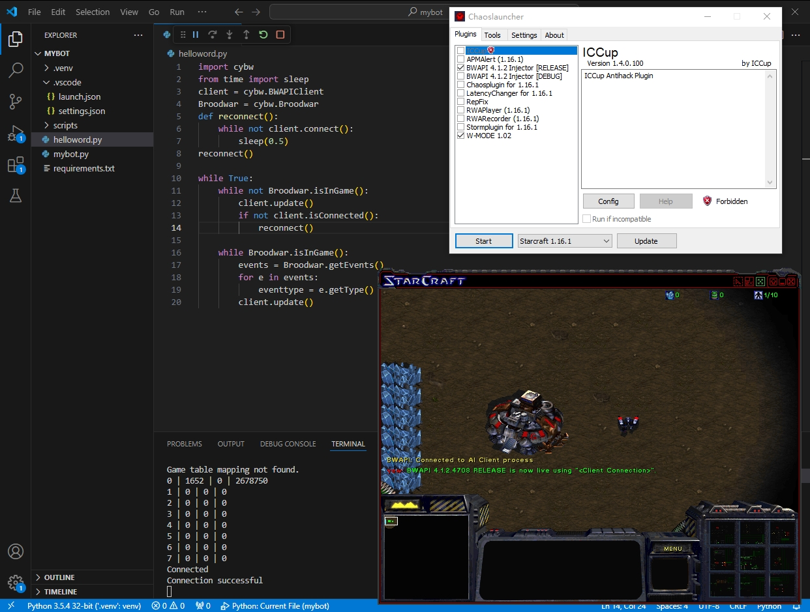
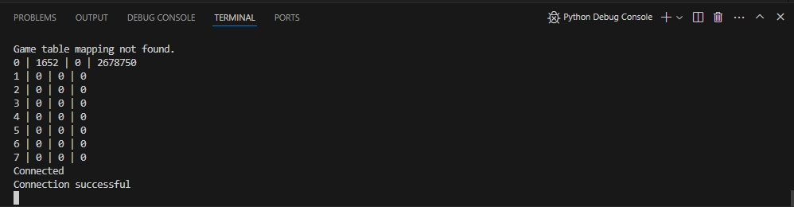
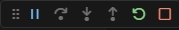
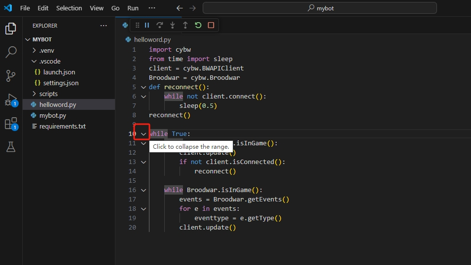
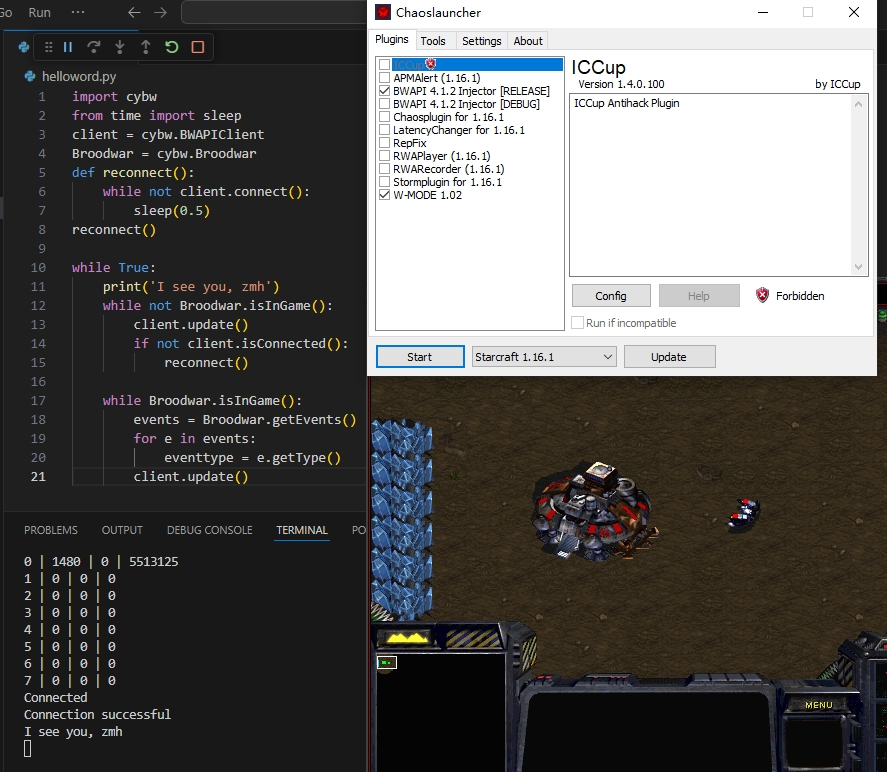

儿童编程02 Hello World
学习目标
- 自己动手，开发一个机器人，学会控制SCV。
- 学习Python中的while语句，代码块概念，print调用
一个机器人最少需要多少代码？
1 | |
上面就是一个用Python语言编写的，最简单的机器人代码，总共20行。后面我们解释每一行代码的含义并不断扩充我们的代码，完成更多不同的任务。但在此之前，先让我们把这个最简单的（也是最简陋的）机器人运行起来，看看他都能干些什么吧。
运行机器人代码
- 右键点击代码根文件夹，选择“通过Code打开”。
👉还记得代码根文件夹在哪吗？
在游戏根文件夹下找到mybot文件夹，我们所有的代码都在这个文件夹下，后面我们把这个mybot文件夹简称为代码根文件夹 - 在左侧红圈处（我们称之为项目浏览器空白处）右键点击，选择“New File…”创建一个新的Python程序文件，并命名为“helloworld.py”


helloworld，就是hello world，作为一个良好的习惯，我们不在程序文件的文件名里面加空格。至于为什么要取这个名字，大概是代表这我们的小机器人来到这个世界上之后最想说的一句话吧“你好，世界”
.py叫文件后缀。电脑中每种文件基本都有各自的文件后缀，以便电脑能区分用什么软件打开这些文件。py是Python的缩写，代表这是一个python程序文件。
- 将上述代码拷贝到helloworld.py文件中并运行下，看看效果如何？

👉还记得怎么运行我们的机器人吗？
提示一下
（a）按F5运行程序。
（b）运行Chaoslauncher.exe启动游戏

运行结果说明
好像什么也没发生，游戏启动起来了，一个SCV傻傻的站在那，一动不动。为什么？为什么？为什么？
因为。。。。因为我们的机器人虽然启动了，但尚未被“注入灵魂”。对于程序而言，我们程序员就像上帝，而当前的程序代码并没让我们的SCV做什么事情，所以他当然只能傻傻的站着了。
但没关系，我们先了解下运行结果，熟悉下各个常用“窗口”到底什么意思，很快的，我们就可以让SCV做些事情，让他别总是那么傻傻地站着（额，难道是从“傻傻站着”变成“傻傻跑着”？）
编辑器
我们编写程序的软件叫编辑器，或者更专业的名字IDE。这个IDE是“集成开发环境”的英文缩写，听上去就很高深莫测的样子。
控制台
在编辑器编写代码的下方，有个小窗口，叫终端（Terminal）也叫控制台（Console）。怎么叫都可以，当然，如果称呼他的英文，感觉更加高深莫测。
他是干什么的呢？主要用来显示程序运行过程中信息，你可以看到，当我们程序运行起来时里面不断闪过各种英文。相当于程序运行过程中，通过这个窗口和你窃窃私语。
“老大，我一会要生产个机枪兵了，你等着看哦”
“老大，我忙死了”
“老大，你看我这样运行对不对啊？不对？不对我也要这么运行，就是任性。”

当你看到如上图这样，程序在控制台打出“Connection successful”时，就是他在向你报告
“老大，我连上游戏了”
程序控制按钮

当我们按F5启动程序之后，就可以在编辑器里面看到上图这个“控制按钮”，其中最右变两个分别是“重启程序”和“停止程序”，这是我们一会就要用到的按钮。其他按钮也很常用，等我们用到时再详细介绍。
把鼠标悬停在按钮上，会出现按钮功能的说明文字哦。
代码讲解
下面，我们逐行讲解下代码，并在讲解的过程中做些小实验
while
我们从第10行开始讲起，我们首先遇到了while关键字，在编辑器中但凡遇到关键字都会给他特殊的颜色，python语言中有很多关键字，while是我们遇到的第一个，他的意思是“如果while后面的数值为True，则一直循环执行这个while管辖的所有代码”
1 | |
while关键字就向一个忠实的看门人，他每次先检查下自己身后的信号灯是不是True，如果是，他就跑到自己管理的代码块里，把他管理的代码块都执行一遍，然后再回头检查下身后的信号灯。如此往复，直到信号灯变成False。
那这个while关键字到底管着多少代码呢？把鼠标移动到while关键字和“10”这个行号之间，会看到while前面出现了个小三角，点击这个三角，就会把while管理的代码块折叠起来，再点击一下，就会恢复展开。
哟吼，他管理的还不少呢。

❓告诉我，第10行的这个while关键字管理的代码块，最远管理到哪？（哪一行？）
在第10行冒号之后，我们键入回车，然后输入print('I see you, zmh')，然后点击程序控制按钮中的“重启程序（Restart）”按钮，并重新启动游戏。你是否在控制台看到程序在和你窃窃私语了呢？
1 | |

Python语言通过缩进来确定关键字管理代码的范围，以第10行的while关键字为例，从while之后的冒号”:”开始，分别管理着我们输入的print语句以及另外两个内部的while语句。print和内部的两个while是不是都是齐头并进的？我们称齐头并进的语句处于相同层级的代码块，也就是说都听他们的上级：第10行的那个while管理
print函数调用
print后面有个括号，我们把一个英文单词后跟一个括号的情况叫函数调用意思是“请调用这个叫print的函数，做他该做的事情”。
哎哟，函数？是不是在哪听过？没错，就是数学上。
print后面跟括号，括号里的东东叫参数。这里，print函数里面有一个参数，是一个用单引号括起来的东东'I see you, zmh'，我们管单引号'或双引号"括起来的一串东东叫字符串也就是一串字符的意思。
那么，print('I see you, zmh')这句的完整含义就是，我有个一个字符串，字符串的内容是“I see you, zmh”，我将这个字符串作为参数，传给print函数，让他做他应该做的事情。
那print函数到底做什么事情的呢？他啊，就是把你传给他的参数显示到控制台的。我们常常通过print函数打印出一些文字，让我们的程序能在运行过程中与我们窃窃私语，从而让我们能了解程序干活干的怎么样，有没有遇到问题。
❓ 除了
print('I see you, zmh')，你还能打印什么内容到控制台？试试看，中英文都试试哦，然后截图会拍照让我检查。